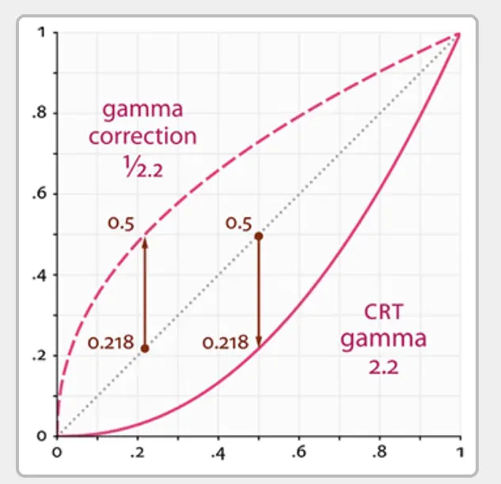

RealTime-Rendering10-Gamma Correction
Gamma Correction
人类视觉与物理亮度
人类的眼睛对暗部变化更敏感，对亮部变化较迟钝。显示器利用这一特性，在有限的位深（通常是 8 位）下，将更多精度分配给暗部，从而在视觉上提供更均匀的亮度分布。
显示器的非线性
CRT 显示器（以及现代 LCD 模拟其行为）具有非线性响应。这种非线性特性实际上与人类视觉系统相匹配。输入电压与输出亮度之间的关系大致为：
其中 γ≈2.2。这意味着如果我们在帧缓冲区中存储线性光照值，显示器会错误地显示它们，使暗部变得更暗。

显示器的伽马响应曲线。横轴是输入信号，纵轴是输出亮度。注意曲线在暗部更为陡峭。
这种非线性响应实际上对人类视觉是有益的，因为人类的眼睛对暗部变化更为敏感。然而，这对计算机图形学带来了挑战。
伽马矫正
早期的图形程序员很快发现了这个问题。为了在显示器上获得看起来正确的图像，他们需要对输出进行补偿。这就是”伽马校正”的起源——在将值写入帧缓冲区之前，将其提升到 1/γ 次幂（约 0.45）。
为了在显示器上正确显示图像，我们需要对输入进行”预校正”——即伽马校正：
这样，显示器的伽马响应（提升到 2.2 次幂）与这个预校正相互抵消，最终产生线性的亮度输出。
正确的渲染管线应该是：
1 | 线性空间光照计算 → 伽马校正（pow(1/2.2)）→ 帧缓冲区 → 显示器（pow(2.2)）→ 线性亮度感知 |
纹理中的伽马
大多数图像（照片、手绘纹理）已经在非线性空间（sRGB）中存储。这是因为：
- 数码相机自动应用伽马校正
- 图像编辑软件默认工作在 sRGB 空间
- 显示器期望 sRGB 输入
如果直接用于光照计算而不转换，会导致错误：
1 | // ❌ 错误：在非线性纹理上进行光照计算 |
sRGB色彩空间
sRGB是一种标准颜色空间，它定义了：
- 色域（红绿蓝三原色的坐标）
- 伽马响应曲线（近似于 gamma 2.2，但有一段线性部分）
关键事实：大多数图像（照片、互联网图片、纹理）都存储在 sRGB 空间中。这意味着它们已经被伽马校正过。
由于光照计算是在线性空间进行的，针对sRGB纹理， 需要先将其从sRGB空间转换到线性空间，有两种方式：
第一种手动在shader中转换：
1 | float gamma = 2.2; |
第二种使用sRGB纹理格式:
1 | // 创建纹理时指定 sRGB 格式 |
当在着色器中采样时，硬件自动将 sRGB 值转换为线性值（pow 2.2）：
1 | uniform sampler2D diffuseTexture; // 绑定为 sRGB 格式 |
| 纹理类型 | 存储格式 | 采样行为 |
|---|---|---|
| 漫反射/基础颜色 | GL_SRGB8 / DXGI_FORMAT_R8G8B8A8_UNORM_SRGB | 硬件自动解伽马 |
| 法线贴图 | GL_RGBA8 / DXGI_FORMAT_R8G8B8A8_UNORM | 直接读取（已是线性） |
| 粗糙度/金属度/AO | GL_R8 / DXGI_FORMAT_R8_UNORM | 直接读取（线性） |
| HDR 环境贴图 | GL_RGBA16F / DXGI_FORMAT_R16G16B16A16_FLOAT | 直接读取（线性） |
| 光照贴图 | GL_RGB9_E5 / DXGI_FORMAT_R9G9B9E5_SHAREDEXP | 根据生成方式决定 |
openGL中实现gamma矫正
方法 1：手动在片元着色器中校正
1 | void main() { |
方法2：OpenGL提供了自动伽马校正机制：
1 | // 启用 sRGB 帧缓冲区 |
启用后，当写入颜色缓冲区时，OpenGL 会自动将线性颜色值转换为 sRGB 空间（近似于 pow 1/2.2）。
HDR 渲染中的顺序
先进行色调映射再进行伽马矫正
1 | // HDR 管线 |